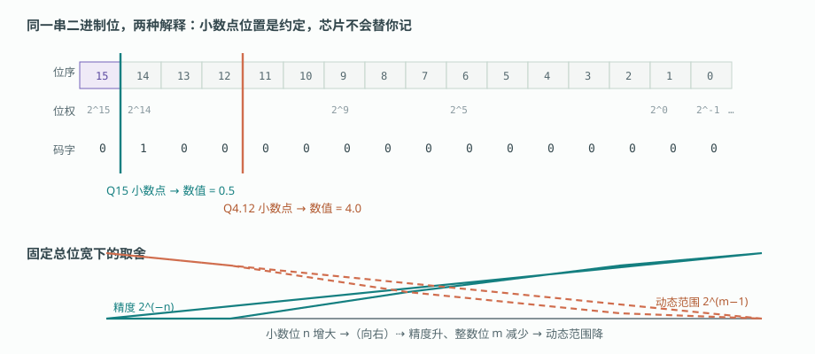
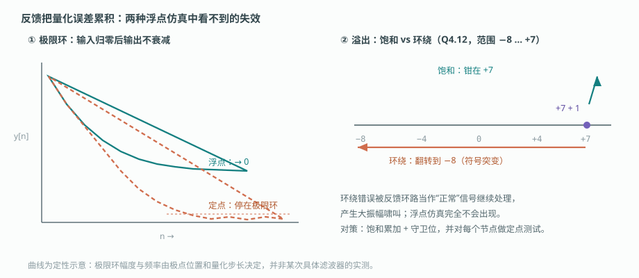

Implementation · Fixed-Point / 20
定点 DSP 实现：Q 格式、量化与溢出
没有浮点单元的芯片只能算整数。用固定的小数点约定表示小数，代价是溢出、量化噪声，以及反馈环路里两种浮点仿真看不到的失效。
浮点仿真通过，硬件为何是噪声？
在双精度浮点里，32 阶 FIR 的系数是 [0.0034, -0.0098, 0.0245, …] 这样的小数。若把它烧进一颗没有浮点单元（FPU）的廉价 DSP，芯片内部只有整数：小数怎么用二进制表示？每个系数只给 16 位，精度损失会不会让滤波器失效？乘积溢出怎么办？
这三个间题共同指向一个事实：浮点仿真验证的是算法，定点实现验证的是数值体系。定点系统每一处小数点的位置、每一个中间结果的位宽都必须由设计者显式决定；芯片不会替你保留任何标度信息。本章把这些问题拆成：表示（Q 格式）、取舍（范围与精度）、误差（量化）、位宽（MAC），以及反馈带来的两类失效。
一个可检验的目标：本章末尾的确定性程序会证明，一阶 IIR 在带舍入的定点下会停在非零极限环，而同一滤波器的浮点响应衰减到量化步长以下。
Q 格式：隐式的小数点
定点数用二进制补码表示，小数点位置由 Qm.n 约定：m 是整数位数（含 1 位符号位），n 是小数位数，总位宽 N=m+n。给定码字位 b，其数值由两位码给出：
式（1）：最高位 b_{N-1} 的位权为负（补码），其余位为正。除以 2^n 就是“小数点左移 n 位”。

0100 0000 0000 0000 不变，只改变小数点位置：Q15 下为 0.5，Q4.12 下为 4.0。位权从 2^15 递减到 2^-n。Q15（即 Q1.15）是最常用的一种：16 位有符号数，1 位整数 + 15 位小数，取值范围 [−1, 1−2⁻¹⁵]，精度 2⁻¹⁵ ≈ 3.05×10⁻⁵。它适合“信号已经归一化到 ±1”的音频与通信前端。
动态范围与精度的取舍
总位宽固定时，分给小数位的越多，精度越高，整数部分越少，动态范围越小。量化步长（LSB）与可表示范围分别为：
式（2）：n 为小数位、m 为整数位（含符号）；Q15 下 x∈[−1, 1−2⁻¹⁵]。
选型由两个约束决定：
- 峰值不溢出：信号与所有中间节点的最大值必须落在整数部分能表示的范围内。
- 小信号不被淹没：量化噪声不能盖过信号中最弱的分量。
常见做法是先留 ¼ 到 ½ 的余量覆盖整数位，再把剩余位分给小数。具体数值需要先用最大幅输入跑一遍浮点仿真，记录每个节点的极值，而不是拍脑袋选一个 Q 格式。
量化：舍入、截断与 SQNR
把浮点映射到定点网格就是量化。两种基本模式：
- 舍入：取最近的可表示值，误差
q−x ∈ [−Δ/2, Δ/2]，均值为 0。 - 截断：丢弃低位（算术右移），误差
q−x ∈ (−Δ, 0]，均值约−Δ/2，引入直流偏置。
常把量化误差近似为与信号无关的均匀白噪声。若误差在 ±Δ/2 上均匀分布，其方差为：
式（3）：Δ=2⁻ⁿ 为 LSB 步长。这是模型而非严格定理，误差与信号相关时它会失效。
在该模型下，满幅正弦经 N 位均匀量化后的信号量化噪声比为
式（4）：前提是满幅正弦、误差均匀白噪声且与信号不相关；16 位对应约 98 dB。小信号或相关误差下该式不成立。
MAC 与守卫位
定点 DSP 的核心操作是乘累加（MAC）。关键细节是乘积位宽：两个 Q15 相乘得到 Q30（15 + 15 位小数），再加符号位实际是 32 位有符号。若累加器只有 32 位，多次累加极易溢出。
因此 DSP 通常配 40 位或 64 位累加器，多出的低位称为守卫位（guard bits）。累加完成后必须右移回目标 Q 格式：
acc = 0;
for (i = 0; i < taps; i++) acc += (int64_t)x[i] * h[i]; /* Q15 × Q15 = Q30 */
y = sat16(acc >> 15); /* 回到 Q15；右移位数必须与 Q 格式一致 */忘记右移、或右移位数算错，会让滤波器增益完全错误——这是定点实现里最常见的错误之一。另一个高发点在边界：16 位 ADC 的原始码本身就是 Q0.15，但与算法期望的“1.0 = 满量程”之间可能差一次左移。这类接口的 Q 格式转换必须显式注释并做单元测试。
反馈的两种失效：极限环与溢出振荡
FIR 只有前馈，量化误差只影响一次；IIR 有反馈，误差会被环路反复放大。这带来两类浮点仿真中完全看不到的失效。
极限环（limit cycle）：输入衰减到接近零后，舍入/截断误差在反馈中累积，输出可能停在不衰减的小幅振荡或直流死区。幅度与频率由极点位置和量化步长决定。缓解手段包括累加器保持高精度、对极小状态强制归零（force-to-zero）、或改用对舍入更鲁棒的格型结构。
溢出振荡（overflow oscillation）：累加溢出若采用环绕（wrap-around），符号会从正突变到负。反馈环路会把这种错误值当作“正常”信号继续处理，产生大振幅、不可预测的啸叫。对策是饱和累加：溢出时钳位到最大/最小可表示值，而不是环绕。

+7 再加 1 时，饱和钳在 +7，环绕却翻转到 −8。曲线为定性示意，非某次具体滤波器的实测。交互：极点位置的量化
IIR 的稳定性取决于极点是否在单位圆内。下面用一个设计半径 0.98、幅角 0.2π 的二阶节演示：滑块改变系数位宽，把 a1, a2 量化到 Q 网格后再求实际极点。量化可能把半径推到单位圆外，滤波器随之不稳定。
动手验证：选择系数位宽
交互仅辅助观察；式（1）–（4）与确定性程序在 JS 关闭时仍可独立理解。
# Q15 量化二阶节系数：a1_q = round(a1 * 2**15) / 2**15
# 完整可运行版（仅标准库）见 examples/20_fixedpoint.py完整可执行例程（20_fixedpoint.py）：断言舍入误差 ≤ Δ/2、截断偏置约 −Δ/2、N=12/16 的 SQNR 接近 6.02N+1.76 dB、Q15×Q15 右移 15 位增益正确、一阶 IIR 停在非零极限环、饱和与环绕的溢出结果。
浮点转定点的五步流程
- 范围估计：用最大幅输入跑浮点仿真，记录所有内部节点的极值。
- Q 格式选择：整数位覆盖极值并留余量，其余位分给小数。
- 量化仿真：定点化系数与中间量，做 bit-true 仿真，对比浮点输出求 SQNR 与最大误差。
- 余量验证：SQNR 不达标就增加位宽或重分配 Q 格式，回到第 2 步。
- Bit-True 验证：定点模型与硬件（RTL 仿真或芯片实测）逐位比较，每一位都必须一致。
边界与失效模式
- SQNR 公式的前提：满幅正弦、误差均匀白噪声且与信号不相关；小信号、相关误差或非白噪声下该式不成立。
- 截断的直流偏置：长期平均会累积；舍入避免了偏置，但可能进入极限环。
- 累加器位宽不足：即使系数与信号都是 Q15，中间累加也可能溢出；守卫位不是浪费。
- 环绕溢出：反馈结构中的符号翻转会引发溢出振荡；必须用饱和累加。
- 极限环：输入归零后输出不归零；需 force-to-zero、更高精度或更鲁棒的结构。
- “定点稳健”不等于“无需测试”：SOS 更稳健，但仍需溢出、定点与真实输入测试。
自检：若一阶 IIR 的极点半径为 0.99，Q15 量化后实际半径会变成多少？这对稳定裕度意味着什么？
参考资料与接口
- MIT OCW · Discrete-Time Signal Processing：量化、有限字长效应、极限环与溢出振荡。
- ARM · CMSIS-DSP：Q7/Q15/Q31 定点类型与饱和运算接口。
- SciPy · Signal processing：浮点参考模型与滤波、滤波器设计接口。